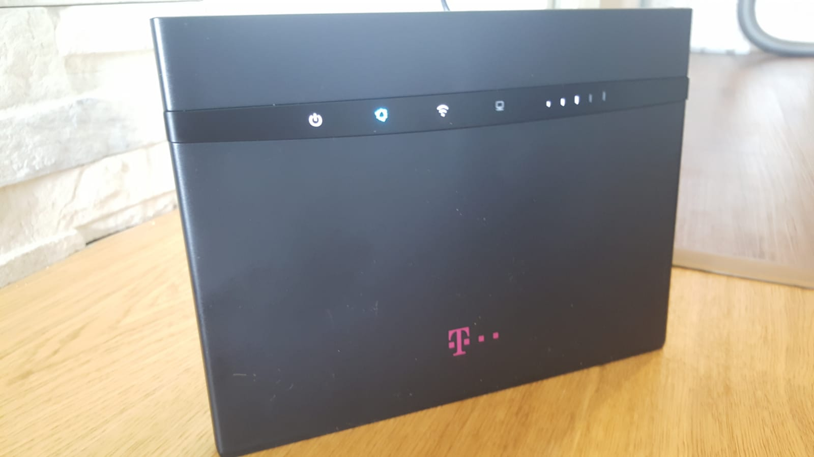
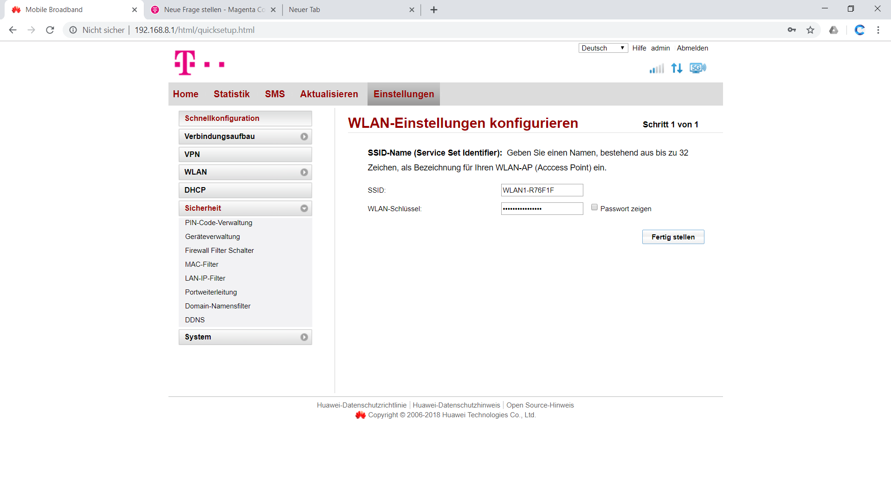

Nintendo Switch lässt sich nicht mit dem Internet Verbinden
Mr.Unbekannt
Hallo, ich habe folgendes Problem: vor kurzem habe ich mir einen Homenet Router geholt (Bild). Er geht ganz gut, jedoch kann ich kein Onlinespiel auf meiner Nintendo Switch Konsole beitreten. Ich habe noch einen Screenshot von den Einstellungen des Router dazugepackt. Falls jemand weiß, was ich ändern muss, wäre ich ihm dankbar, wenn er mir bescheid geben könnte


MarioM
Hello,
Hast du schon mal versucht den APN auf business umzustellen?
Liebe Grüße
Mr.Unbekannt
vor 2 Stunden schrieb MarioM:
Hello,
Hast du schon mal versucht den APN auf business umzustellen?
Du müsstest mehrere Weiterleitungen eingeben, immer Bereiche wo die oben genannten nicht vorkommen ...
z.B.: 1- 67, 69 - 1700, etc
Anonymo276
vor 17 Minuten schrieb MarioM:
Du müsstest mehrere Weiterleitungen eingeben, immer Bereiche wo die oben genannten nicht vorkommen ...
z.B.: 1- 67, 69 - 1700, etc
Super, hat funktioniert.
Vielen Dank!
Mr.Unbekannt
Bei mir auch. Kann jetzt Online Partien spielen.
Danke sehr!
DerBen
Hallo!
Ich habe ein ähnliches Problem mit meiner Switch, allerdings mit der alcatel HH40V (mobiles Internet). Ab und zu komme ich in die Lobby und bekomme auch 1-2 andere Spieler rein, aber bei Splatoon 2 ist es quasi unmöglich die 7 notwendigen Mitspieler zu finden, was bei Freunden nie ein Problem war.
Meine Vermutung ist, dass es an meinen Einstellungen bzw. dem NAT liegt.
Folgendes habe ich schon probiert:
- Meiner Switch eine statische IP vergeben
- diese IP als DMZ- host im Router eingetragen
- uPnP aktiviert
- dem Router einen fixen Wifi-Channel vergeben, der möglichst wenig Überlappung zu meinen Nachbarn hat (laut Wifi Analyzer app)
- In der Port-Weiterleitung folgende TCP-Ports eingetragen, um Splatoon 2 spielen zu können: 6667,12400,28910,29900,29901,29920 (
https://portforward.com/splatoon-2/)
- Da mein Roter scheinbar keine Ranges sondern nur einzelne Channels erlaubt, habe ich momentan keine UDP-Ports eingetragen.
- Die MAC-Adresse meiner Switch auf die White-List gesetzt
Leider hat nichts davon signifikante Verbesserungen ergeben. Ich bin jetzt auch nicht technisch versiert und hab das alles jetzt einfach nach Tutorials eingetragen.
APN habe ich in meinen Router-Settings nicht gefunden... welche Möglichkeiten habe ich sonst noch?
Bearbeitet
von DerBen
Mr.Unbekannt
Hi Ben,
leider kann ich dir nicht weiterhelfen. Ich würde dir aber empfehlen einen eigenen Post zu machen, dann wirst du schnell von den Profis entdeckt.
MarioM
On 8/29/2019 at 12:51 PM, Anonymo276 said:
Super, hat funktioniert.
Vielen Dank!
Freut mich, dass es funktioniert hat
On 8/29/2019 at 12:56 PM, Mr.Unbekannt said:
Bei mir auch. Kann jetzt Online Partien spielen.
Danke sehr!
Freut mich, dass es funktioniert hat
On 9/1/2019 at 5:19 PM, DerBen said:
Hallo!
Ich habe ein ähnliches Problem mit meiner Switch, allerdings mit der alcatel HH40V (mobiles Internet). Ab und zu komme ich in die Lobby und bekomme auch 1-2 andere Spieler rein, aber bei Splatoon 2 ist es quasi unmöglich die 7 notwendigen Mitspieler zu finden, was bei Freunden nie ein Problem war.
Meine Vermutung ist, dass es an meinen Einstellungen bzw. dem NAT liegt.
Folgendes habe ich schon probiert:
- Meiner Switch eine statische IP vergeben
- diese IP als DMZ- host im Router eingetragen
- uPnP aktiviert
- dem Router einen fixen Wifi-Channel vergeben, der möglichst wenig Überlappung zu meinen Nachbarn hat (laut Wifi Analyzer app)
- In der Port-Weiterleitung folgende TCP-Ports eingetragen, um Splatoon 2 spielen zu können: 6667,12400,28910,29900,29901,29920 (
https://portforward.com/splatoon-2/)
- Da mein Roter scheinbar keine Ranges sondern nur einzelne Channels erlaubt, habe ich momentan keine UDP-Ports eingetragen.
- Die MAC-Adresse meiner Switch auf die White-List gesetzt
Leider hat nichts davon signifikante Verbesserungen ergeben. Ich bin jetzt auch nicht technisch versiert und hab das alles jetzt einfach nach Tutorials eingetragen.
APN habe ich in meinen Router-Settings nicht gefunden... welche Möglichkeiten habe ich sonst noch?
{kind=link}
.png.245d94db240506984b3e6138472ce57a.png){kind=link}
{kind=link}
.png.8993bcfdd96d0010b5c8de465ea6ac7a.png){kind=link}